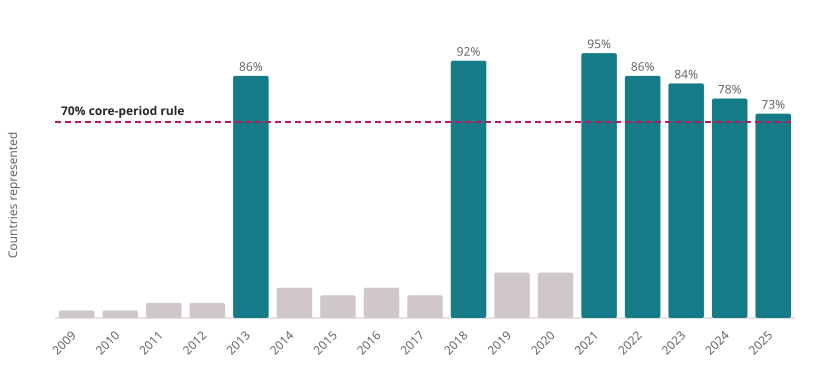
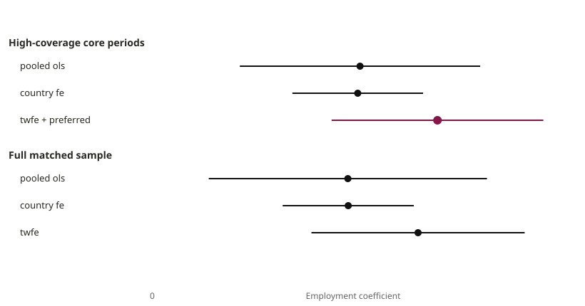
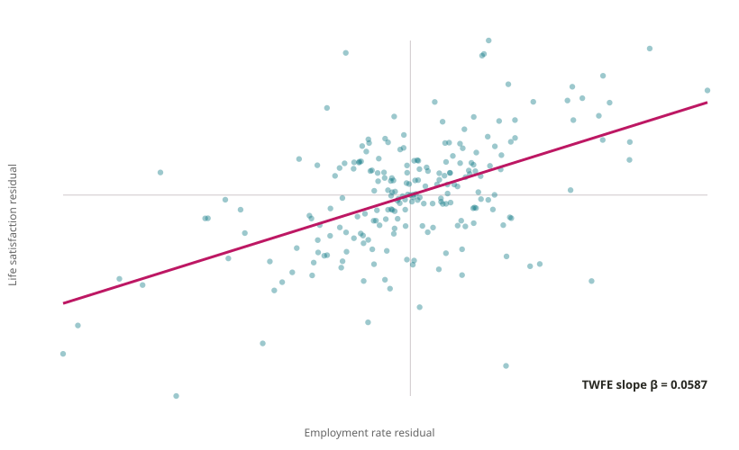

Is a higher employment rate associated with higher life satisfaction within countries over time?
The analysis uses life satisfaction as the outcome and the employment rate as the predictor. Employment is measured in percentage points and life satisfaction on a 0–10 scale.
This is an econometric demonstration rather than a causal identification design. The goal is to show, step by step, how pooled regression, country fixed effects, and two-way fixed effects answer increasingly within-country versions of the same associational question.
The source knows the data
OECD observations can carry OBS_STATUS metadata indicating qualifications such as a time-series break, a definition difference, an estimated value, a provisional value, or low reliability.
These attributes are part of the SDMX observation structure, not cosmetic annotations (OECD 2026).
The regression analysis below does not automatically discard or correct flagged observations. Observation status should therefore be inspected within the matched sample before interpreting the estimates as comparable over time.
Table 13OECD observation-status flags in the matched TWFE sampleA pre-model audit of source status metadata
Loading observation-status audit…
Estimation Sample
The matched data are irregular over time. The matched pair begins in 2009 because that is the first period in the frozen intersection of the selected life-satisfaction and employment series; earlier observations elsewhere in Current well-being do not enter this matched pair.
A balanced panel is not required for TWFE. For this teaching example, however, years represented by only a handful of countries would make the main comparison harder to interpret. The project therefore defines a high-coverage core sample using periods observed for at least 70% of the countries in the matched sample.
The 70% cutoff is a project-defined teaching and sample-quality rule, not a requirement of the TWFE estimator.
Figure 5 identifies the periods selected by this rule.
Figure 5Country coverage by periodThe dashed line marks the project-defined 70% threshold used to define the core sample

The rule selects 7 periods: 2013, 2018, 2021, 2022, 2023, 2024, 2025. Together they contain 220 matched observations across 36 countries and 7 periods.
The pooled model can use all 220 observations. The fixed-effects models use 219 because Mexico appears only once in the core sample. A country observed only once provides no within-country variation, so that observation does not contribute to the country fixed-effects comparison.
This difference in fitted-model sample size is mechanical rather than substantive, but it is worth making visible when comparing the models.
The full matched sample is retained as a sensitivity check using all available matched periods.
Show the reference areas in the full matched sample
Loading matched-sample reference areas…
The expandable list reports the reference areas actually represented in the matched data. It should not be read as an OECD membership roster.
Here, \(\alpha_i\) absorbs time-invariant differences across countries. The coefficient is therefore identified from changes within countries rather than permanent differences between them.
The two-way fixed-effects specification adds period fixed effects:
Here, \(\lambda_t\) absorbs shocks or conditions shared across countries in the same observed period. The TWFE coefficient therefore uses within-country variation after also removing common period effects.
Standard errors are clustered by country to allow observations from the same country to have correlated errors over time.
Figure 6Estimated employment coefficientsApproximate 95% normal intervals (estimate ± 1.96 country-clustered standard errors) across specifications

In the core sample, the pooled and country-fixed-effects estimates are very similar: 0.0415 and 0.0410, respectively.
Adding period fixed effects increases the estimate to 0.0587. The exercise is not about choosing a model because its coefficient is larger or more statistically significant; each specification removes a different source of variation.
What the TWFE Coefficient Uses
A useful way to understand the TWFE coefficient is through the Frisch–Waugh–Lovell theorem:
First, residualize life satisfaction with respect to country and period indicators.
Then do the same for employment.
The remaining variation is the part of each variable that cannot be explained by country fixed effects or common period effects.
Regressing the residualized outcome on the residualized predictor gives the same slope as the TWFE model:
TWFE does not require every country to be observed in every period.
For a perfectly balanced panel, two-way residualization can be written using the familiar subtraction of unit and time means followed by addition of the grand mean. This panel is unbalanced, so the project instead residualizes each variable against the full country-and-period fixed-effect design matrix.
That is the exact Frisch–Waugh–Lovell transformation for the observations available here.
Figure 7Life satisfaction and employment after residualizing both variables with respect to country and period fixed effectsThe line has the TWFE slope

The residualized regression slope is 0.058659 and the direct TWFE estimate is 0.058659. Their absolute difference is 3.33e-16, which is numerical rounding error.
Interpretation
In the preferred core-period TWFE specification:
\[
\widehat{\beta}
=
0.0587
\]
A one-percentage-point higher employment rate within a country, after accounting for time-invariant country differences and effects common to countries in the same period, is associated with approximately 0.059 points higher life satisfaction.
Under this linear specification, a five-percentage-point difference corresponds mechanically to approximately 0.293 points on the 0–10 life-satisfaction scale.
The full matched sample produces a similar TWFE estimate of 0.0544. This is a useful sensitivity check: the estimated association is similar when the sparse periods are retained. It is not, by itself, evidence that the relationship is causal.
What This Does Not Establish
Country fixed effects absorb country characteristics that do not change over time, and period fixed effects absorb shocks shared across countries in a period.
They do not eliminate time-varying country-specific confounding, reverse causality, measurement error, or other sources of endogeneity.
The coefficient should therefore be interpreted as a within-country association conditional on country and period fixed effects, not as the causal effect of employment on life satisfaction.
The exercise illustrates what TWFE changes statistically. A causal interpretation would require a separate identification strategy.
---engine: markdowntitle: "Two-Way Fixed Effects (TWFE)"subtitle: "Employment and life satisfaction"---## Research Question---A Teaching ExampleIs a higher employment rate associated with higher life satisfaction within countries over time?The analysis uses **life satisfaction** as the outcome and the **employment rate** as the predictor. Employment is measured in percentage points and life satisfaction on a 0–10 scale.This is an econometric demonstration rather than a causal identification design. The goal is to show, step by step, how pooled regression, country fixed effects, and two-way fixed effects answer increasingly within-country versions of the same associational question.::: {.context-note}### [The source knows the data]{.smallcaps}OECD observations can carry `OBS_STATUS` metadata indicating qualifications such as a time-series break, a definition difference, an estimated value, a provisional value, or low reliability.These attributes are part of the SDMX observation structure, not cosmetic annotations [@oecd_hows_life_metadata_2026].The regression analysis below does not automatically discard or correct flagged observations. Observation status should therefore be inspected within the matched sample before interpreting the estimates as comparable over time.::: {#tbl-twfe-status-audit}<div id="twfe-status-audit" aria-live="polite">Loading observation-status audit…</div>OECD observation-status flags in the matched TWFE sample<span class="object-caption-subtitle">A pre-model audit of source status metadata</span>::::::<script src="../assets/twfe-audit.js" defer></script>## Estimation SampleThe matched data are irregular over time. The matched pair begins in 2009 because that is the first period in the frozen intersection of the selected life-satisfaction and employment series; earlier observations elsewhere in *Current well-being* do not enter this matched pair.A balanced panel is not required for TWFE. For this teaching example, however, years represented by only a handful of countries would make the main comparison harder to interpret. The project therefore defines a high-coverage core sample using periods observed for at least 70% of the countries in the matched sample.The 70% cutoff is a project-defined teaching and sample-quality rule, not a requirement of the TWFE estimator.@fig-period-coverage identifies the periods selected by this rule.::: {.cell}```{.r .cell-code}ggplot( period_coverage,aes(x = TIME_PERIOD,y = unit_coverage )) +geom_col() +geom_hline(yintercept =0.70,linetype ="dashed",linewidth =0.7 ) +scale_y_continuous(labels =function(x) paste0(round(100* x), "%"),limits =c(0, 1) ) +labs(x ="Period",y ="Countries represented" ) +theme_minimal(base_size =12)```::: {.cell-output-display}{#fig-period-coverage fig-alt='Bars show the share of matched-sample countries represented in each period. A dashed horizontal line marks the project-defined 70 percent core-period rule.' width=768 fig-alt="Bars show the share of matched-sample countries represented in each period. A dashed horizontal line marks the project-defined 70 percent core-period rule."}::::::The rule selects 7 periods: 2013, 2018, 2021, 2022, 2023, 2024, 2025. Together they contain 220 matched observations across 36 countries and 7 periods.The pooled model can use all 220 observations. The fixed-effects models use 219 because Mexico appears only once in the core sample. A country observed only once provides no within-country variation, so that observation does not contribute to the country fixed-effects comparison.This difference in fitted-model sample size is mechanical rather than substantive, but it is worth making visible when comparing the models.The full matched sample is retained as a **sensitivity check** using all available matched periods.<details class="twfe-sample-composition"><summary><strong>Show the reference areas in the full matched sample</strong></summary><div id="twfe-sample-areas" aria-live="polite">Loading matched-sample reference areas…</div></details>The expandable list reports the reference areas actually represented in the matched data. It should not be read as an OECD membership roster.## Model SequenceThe pooled model is:$$Y_{it} = \alpha + \beta X_{it} + \varepsilon_{it}$$It combines differences **between countries** with changes **within countries over time**.Adding country fixed effects gives:$$Y_{it} = \alpha_i + \beta X_{it} + \varepsilon_{it}$$Here, $\alpha_i$ absorbs time-invariant differences across countries. The coefficient is therefore identified from changes within countries rather than permanent differences between them.The two-way fixed-effects specification adds period fixed effects:$$Y_{it} = \beta X_{it} + \alpha_i + \lambda_t + \varepsilon_{it}$$Here, $\lambda_t$ absorbs shocks or conditions shared across countries in the same observed period. The TWFE coefficient therefore uses within-country variation after also removing common period effects.Standard errors are clustered by country to allow observations from the same country to have correlated errors over time.::: {#tbl-models .cell tbl-cap='Employment-rate coefficient across specifications'}```{.r .cell-code}model_table <- model_summary |> dplyr::arrange(factor( sample,levels =c("High-coverage core periods","Full matched sample" ) ), model_label ) |> dplyr::transmute(Sample = sample,Model =as.character(model_label),N = observations,Estimate =sprintf("%.4f", estimate),`Clustered SE`=sprintf("%.4f", std_error),`p-value`=format_p(p_value) )knitr::kable( model_table,align =c("l", "l", "r", "r", "r", "r"))```::: {.cell-output-display}|Sample |Model | N| Estimate| Clustered SE| p-value||:--------------------------|:-------------------------|---:|--------:|------------:|-------:||High-coverage core periods |Pooled OLS | 220| 0.0415| 0.0136| 0.004||High-coverage core periods |Country FE | 219| 0.0410| 0.0074| < .001||High-coverage core periods |TWFE: country + period FE | 219| 0.0587| 0.0120| < .001||Full matched sample |Pooled OLS | 252| 0.0388| 0.0157| 0.018||Full matched sample |Country FE | 251| 0.0389| 0.0074| < .001||Full matched sample |TWFE: country + period FE | 249| 0.0544| 0.0120| < .001|::::::::: {.cell}```{.r .cell-code}model_plot <- model_summary |> dplyr::mutate(lower = estimate -1.96* std_error,upper = estimate +1.96* std_error,sample =factor( sample,levels =c("High-coverage core periods","Full matched sample" ) ) )ggplot( model_plot,aes(x = model_label,y = estimate,ymin = lower,ymax = upper )) +geom_hline(yintercept =0,linewidth =0.4,linetype ="dashed" ) +geom_pointrange() +facet_wrap(~ sample) +labs(x =NULL,y ="Employment coefficient" ) +theme_minimal(base_size =12) +theme(axis.text.x =element_text(angle =20,hjust =1 ) )```::: {.cell-output-display}{#fig-model-progression fig-alt='Coefficient estimates and normal-approximation intervals for pooled OLS, country fixed effects, and two-way fixed effects, shown for core and full samples.' width=768 fig-alt="Coefficient estimates and normal-approximation intervals for pooled OLS, country fixed effects, and two-way fixed effects, shown for core and full samples."}::::::In the core sample, the pooled and country-fixed-effects estimates are very similar: 0.0415 and 0.0410, respectively.Adding period fixed effects increases the estimate to 0.0587. The exercise is not about choosing a model because its coefficient is larger or more statistically significant; each specification removes a different source of variation.## What the TWFE Coefficient UsesA useful way to understand the TWFE coefficient is through the Frisch–Waugh–Lovell theorem:- First, residualize life satisfaction with respect to country and period indicators.- Then do the same for employment.The remaining variation is the part of each variable that cannot be explained by country fixed effects or common period effects.Regressing the residualized outcome on the residualized predictor gives the same slope as the TWFE model:$$\widetilde{Y}_{it}=\beta\widetilde{X}_{it}+\widetilde{\varepsilon}_{it}$$::: {.data-note}### [An unbalanced-panel detail]{.smallcaps}TWFE does not require every country to be observed in every period.For a perfectly balanced panel, two-way residualization can be written using the familiar subtraction of unit and time means followed by addition of the grand mean. This panel is unbalanced, so the project instead residualizes each variable against the full country-and-period fixed-effect design matrix.That is the exact Frisch–Waugh–Lovell transformation for the observations available here.:::::: {.cell}```{.r .cell-code}twfe_beta <- fwl_verification$twfe_coefficient[[1]]ggplot( transformed,aes(x = employment_rate_twfe,y = life_satisfaction_twfe )) +geom_hline(yintercept =0,linewidth =0.3 ) +geom_vline(xintercept =0,linewidth =0.3 ) +geom_point(alpha =0.55,size =2 ) +geom_abline(intercept =0,slope = twfe_beta,linewidth =1.1,color ="#871548" ) +labs(x ="Employment rate residual",y ="Life satisfaction residual" ) +theme_minimal(base_size =12)```::: {.cell-output-display}{#fig-fwl fig-alt='Scatterplot of life-satisfaction residuals against employment-rate residuals after country and period adjustment. The reference line has the TWFE slope.' width=768 fig-alt="Scatterplot of life-satisfaction residuals against employment-rate residuals after country and period adjustment. The reference line has the TWFE slope."}::::::The residualized regression slope is 0.058659 and the direct TWFE estimate is 0.058659. Their absolute difference is 3.33e-16, which is numerical rounding error.## InterpretationIn the preferred core-period TWFE specification:$$\widehat{\beta}=0.0587$$A one-percentage-point higher employment rate **within a country**, after accounting for time-invariant country differences and effects common to countries in the same period, is associated with approximately 0.059 points higher life satisfaction.Under this linear specification, a five-percentage-point difference corresponds mechanically to approximately 0.293 points on the 0–10 life-satisfaction scale.The full matched sample produces a similar TWFE estimate of 0.0544. This is a useful sensitivity check: the estimated association is similar when the sparse periods are retained. It is not, by itself, evidence that the relationship is causal.## What This Does Not EstablishCountry fixed effects absorb country characteristics that do not change over time, and period fixed effects absorb shocks shared across countries in a period.They do not eliminate time-varying country-specific confounding, reverse causality, measurement error, or other sources of endogeneity.The coefficient should therefore be interpreted as a **within-country association conditional on country and period fixed effects**, not as the causal effect of employment on life satisfaction.The exercise illustrates what TWFE changes statistically. A causal interpretation would require a separate identification strategy.